Un entorno 3D para gráficas de superficie de funciones de dos variables: camine sobre la gráfica de f(x, y), lea sus derivadas parciales sobre el terreno y encuentre el máximo sobre un conjunto factible.
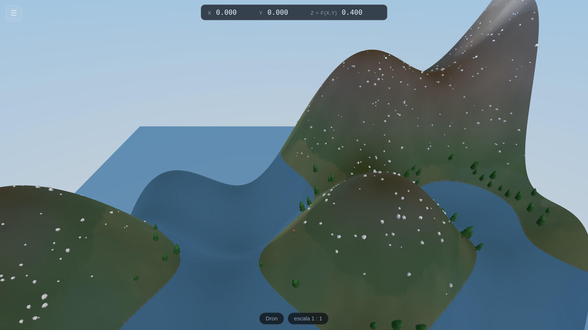
Escrita para alguien que nunca ha instalado ni ejecutado un programa como este.
Cada paso está explicado. Nada de lo que aparece aquí exige escribir código.
Versión 1.0 · Funciona en Windows, macOS, Linux, iPad, iPhone y Android · No requiere instalación
Apéndice A — Tarjeta de atajos de teclado (imprima esa página para el aula)
Apéndice B — Todos los archivos que recibió, y qué hace cada uno
Usted recibió una carpeta llamada Gradient-Peaks. Si llegó como un archivo
.zip, primero debe descomprimirla — vea el recuadro más abajo.
Dentro encontrará esto:
| Elemento | Qué es |
|---|---|
Gradient-Peaks.html |
El programa. Haga doble clic y se abre en su navegador y funciona. Este único archivo lo contiene todo. No necesita internet. |
Gradient-Peaks-Guia.pdf |
Este documento. |
website/ |
Una carpeta con el mismo programa dividido en sus partes. Solo la necesita si quiere publicarlo en internet para sus estudiantes (parte 11) o instalarlo como aplicación (parte 12). |
LEEME.txt |
Un resumen de una página, en texto simple, de lo que está leyendo ahora. |
Hacer doble clic en un archivo .zip a menudo le muestra el contenido sin
extraerlo realmente, y los programas ejecutados desde esa vista previa se comportan mal.
Windows: clic derecho sobre el .zip → Extraer todo… → Extraer.
macOS: doble clic sobre el .zip. Al lado aparece una carpeta
normal. Use esa carpeta.
Gradient-Peaks.html.No hay nada que instalar, ninguna cuenta que crear y ninguna conexión a internet necesaria.
El programa no está «descargando» nada: está dibujando la montaña a partir de la fórmula
f(x,y) = (x*y)^0.5, que puede ver escrita en la caja superior del panel.
Si su navegador está configurado en español, el programa aparece en español automáticamente. También puede cambiarlo en cualquier momento con el selector Español / English en la esquina superior del panel, sin perder nada de lo que esté haciendo.
Y si publica el programa en una dirección web (parte 11), puede añadirle
?lang=es al final del enlace para que a sus estudiantes les abra en español
sin importar cómo tengan configurado el navegador.
Cualquier navegador moderno sirve, pero Google Chrome y
Microsoft Edge dan el resultado más fluido. Para elegir uno: clic derecho
sobre Gradient-Peaks.html → Abrir con → elija su navegador. En macOS
la opción es la misma; mantenga Control y haga clic si no tiene botón derecho.
Dentro de la carpeta website/ hay otro archivo llamado index.html.
Hacer doble clic en ese le dará una pantalla en blanco. No es una falla. Por
razones de seguridad, los navegadores no permiten que una página abierta directamente desde
su disco duro cargue sus propios archivos de programa por separado. El archivo único
Gradient-Peaks.html evita el problema porque ya lo lleva todo dentro.
En su propio computador use Gradient-Peaks.html. Use la carpeta
website/ solo cuando lo publique en una dirección web (parte 11).
Casi con seguridad, sí. El programa necesita una función gráfica llamada WebGL, que todos los navegadores tienen desde alrededor de 2013.
| Necesita | Detalles |
|---|---|
| Un computador o teléfono | De 2014 en adelante, aproximadamente. Se mantuvo deliberadamente pequeño —menos de un megabyte— para que funcione en portátiles escolares y tabletas económicas. |
| Un navegador moderno | Chrome, Edge, Firefox o Safari, actualizado en los últimos años. |
| Nada más | Sin internet, sin Java, sin Flash, sin complementos, sin contraseña de administrador. |
Abra Gradient-Peaks.html. Si ve una montaña, ya está — esa es la prueba.
Si en cambio ve una pantalla en blanco o negra, vaya a la parte 13.
Como se trata de una página web corriente, no activa las restricciones de instalación de
software que bloquean la mayoría de las máquinas institucionales. No hay instalador ni
.exe. Si sus estudiantes pueden abrir una página web, pueden usar esto.
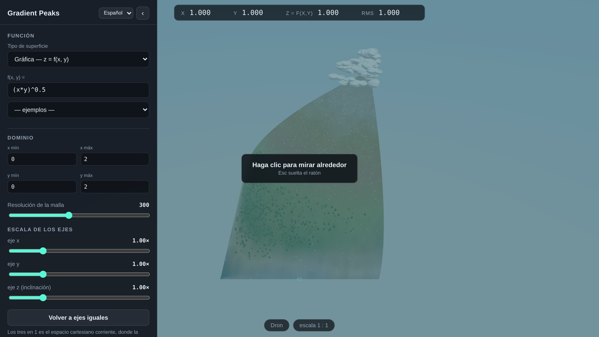
x, y, la
altura z = f(x,y) y RMS. Abajo, el modo de vista y la escala
actuales. Usted empieza en el aire, mirando toda la superficie.x e y son el punto donde está parado el explorador;
z = f(x,y) es la altura allí. El cuarto, RMS, es el
valor absoluto de la pendiente de la curva de nivel que pasa por ese punto:
RMS = |∂f/∂x ÷ ∂f/∂y|
Derivando implícitamente f(x, y) = c se obtiene
dy/dx = −fx/fy a lo largo de la curva de nivel, de modo que este
número dice cuántas unidades de y compra una unidad de x manteniéndose a
la misma altura: la relación marginal de sustitución. Se muestra sin signo, aparece esté o no
activada alguna flecha de derivadas, y se va a ∞ justo donde la curva de nivel se
vuelve vertical (fy = 0). En un punto crítico, donde ambas parciales se
anulan, es genuinamente indeterminado y aparece un guion.
Usted empieza como un dron, sobrevolando la gráfica. Esta primera vista es deliberada: antes de bajar y pararse sobre la superficie, conviene verla como lo que es —la gráfica de una función.
Haga un clic en cualquier parte de la montaña. El mensaje «Haga clic para mirar alrededor» desaparece y el puntero del ratón se esfuma. Es normal, y es exactamente como se comporta un juego en 3D: ahora el ratón gira su cabeza en lugar de mover un puntero.
Mueva el ratón para mirar alrededor. Use W A S D para volar. Espacio sube y Ctrl baja. Mantenga Shift para ir más rápido.
Esc le devuelve el puntero del ratón. Si en algún momento se siente atrapado, presione Esc. No se pierde nada. Vuelva a hacer clic en la escena para seguir mirando alrededor.
Presione 2. Usted cae sobre la superficie, detrás de un pequeño explorador de chaqueta naranja que mide exactamente 1,80 metros. Esa figura es la regla de todo lo demás en la escena: los árboles, las rocas y el círculo de medición que verá en un momento están dimensionados con respecto a una persona.
Camine con W A S D. Observe cómo cambian los
números de arriba a medida que se mueve. Esa lectura es el propósito de caminar:
el estudiante siente la pendiente en las manos mientras ve subir z.
Presione 1 para ver por los ojos del propio explorador, 3 para volver al dron y 2 para regresar a la vista por encima del hombro.
«Acercar» son dos peticiones distintas, y antes compartían un solo control.
La rueda mueve la cámara. Gírela hacia arriba para acercarse y hacia abajo para alejarse; en un trackpad, haga el gesto de pellizco. Nada de la matemática cambia: el explorador conserva exactamente su tamaño, y con él toda medida tomada contra él. Donde la cámara son los ojos de alguien y no hay nada más cerca adonde ir, la rueda pone en su lugar un objetivo más largo.
La rueda con ⌘ pulsada cambia el tamaño del explorador (⊞ en Windows; Alt u Option funciona en todas partes, y es la tecla a la que conviene recurrir si su sistema se traga la otra). Es la regla de acercamiento de la Parte 4 en otra mano: encoger al explorador amplía la superficie, y así se llega a la escala en la que una función diferenciable es indistinguible de su plano tangente.
Ambas tareas tienen además un dial en el borde derecho de la pantalla, porque una tableta no tiene rueda ni tecla modificadora. El dial de arriba es la cámara y el de abajo el tamaño del explorador, y cada uno lleva encima un botoncito que lo devuelve a lo normal. Corren en la única dirección en que puede correr un dial vertical: arriba es más de aquello que rotula.
El tamaño del explorador va de 1 : 10.000 —0,18 mm de altura, donde una función diferenciable es indistinguible de su plano tangente— hasta 100 : 1, donde mide 180 m y cruza una ladera de una zancada. Ambos diales cuentan décadas y no metros, que es la única manera de que seis órdenes de magnitud quepan en un solo deslizador: uno lineal gastaría nueve décimas partes de su recorrido dentro de la década mayor y dejaría inalcanzable el extremo interesante.
Mantenga pulsada ⌘/⊞ o Alt y las teclas de movimiento dejan de moverle y pasan a apuntarle: W A S D o las flechas giran la vista, a un cuarto de vuelta por segundo, de modo que una vuelta completa lleva cuatro segundos y una corrección pequeña es un toque. Está limitado justo antes de la vertical, así que la vista nunca se vuelca por debajo del suelo sobre el que está. Esto es para quien trabaja en un portátil sin un trackpad con el que apuntar, o demuestra en una pizarra sin un ratón a mano.
Mantenida, no pulsada y soltada, como en cualquier juego en 3D. El modo dura exactamente lo que dura la pulsación y termina en el instante en que se suelta, y toda tecla que estuviera pulsada en ese momento se suelta también. Esto último importa más de lo que parece: mientras ⌘ está pulsada, macOS no entrega en absoluto la liberación de una tecla corriente, de modo que un programa que no soltara por su cuenta creería que usted sigue pulsando W y echaría a andar en cuanto soltara ⌘.
Las tres funcionan, pero el sistema operativo se reserva algunas combinaciones antes de que ninguna página web las vea. En un Mac, ⌘+W cierra la pestaña y nada que haga una página puede impedirlo, así que use ahí ⌥ (Option) si quiere W A S D; ⌘ con las flechas va bien. En Windows, ⊞+flechas es el ajuste de ventanas y nunca llega al navegador, de modo que use ⊞ con W A S D, o Alt con cualquiera de las dos. Alt/⌥ es la que funciona en todas partes con todo.
En vez de pedirle que recuerde todo eso, Tecla que se mantiene para mirar, en la sección Vista, le deja fijarla: cualquiera de las dos, solo Alt/⌥, o solo ⌘/⊞. Empieza en cualquiera, que es lo más amplio que puede ofrecerse sin saber de quién es el teclado, y queda guardada en la máquina: pierda una pestaña una vez por ⌘+W y puede pasarse a Option y no volver a pensar en ello. Es la misma tecla que pone la rueda sobre el tamaño del explorador, así que solo hay una que recordar.
Presione Esc para soltar el ratón y luego Tab para ocultar o mostrar el panel de control. También puede usar el botón ‹ de su esquina, o el botón ☰ que lo reemplaza.
Cuando el cursor está dentro de una caja de texto, las letras escriben letras: no activan
atajos. Así, escribir x*y no cambiará por accidente tres ajustes. Presione
Enter al terminar de escribir para aplicar lo escrito y salir de la caja.
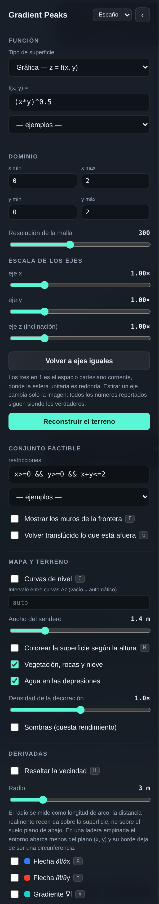
Tipo de superficie — hay tres, y solo la primera es un paisaje por el que se pueda caminar.
(x, y), o ninguna, así que no hay un ∂f/∂x de un solo valor que
calcular — pero la superficie en sí se puede pisar perfectamente, y la parte 8 explica qué
significan «derivada» y «rejilla» cuando no hay ninguna f que las tenga.f(x, y) = — la fórmula que se convierte en el paisaje. Escriba
una nueva y presione Enter. La parte 5 explica la notación completa.
— ejemplos — — un menú de funciones ya preparadas. Elegir una la carga y
ajusta un dominio razonable. Es la forma más rápida de explorar. Una de ellas, Bola de
ganchillo hiperbólica (Nash–Kuiper, C¹), merece mención aparte: es un raro retrato de un
teorema real sobre clases de regularidad. Hilbert demostró en 1901 que ninguna superficie
suave (C²) en el espacio ordinario puede llevar la métrica hiperbólica
verdadera en ningún trozo que siga siendo hiperbólico sin límite: la curvatura tendría que
dispararse en el borde. Nash y Kuiper mostraron en los años cincuenta que bajar a C¹
—una derivada, continua, pero sin promesa sobre la segunda— elimina por completo esa obstrucción:
existe una copia isométrica C¹ en un disco de cualquier tamaño. La fórmula
que carga este ejemplo es el caso explícito de una sola onda de su construcción, restringido al
radio a = 1/√3 donde el desajuste con la métrica verdadera es menor; el único rizo
que se ve es precisamente ese desajuste, hecho visible. Tampoco es casualidad que sea el aspecto de
una verdadera superficie hiperbólica de ganchillo: un modelo físico de exactamente este teorema,
tejido punto a punto. Al elegirla también se limita el dominio al disco en el que la construcción
es válida, mediante el mecanismo de conjunto factible que se explica a continuación.
Un segundo ejemplo especial es el Monte San Elías (terreno real): no una
fórmula, sino la montaña de verdad — un modelo digital de elevación de los 40 km alrededor de la
cima (Was’eitushaa, Pico Fronterizo 186, 5 489 m, en la frontera Alaska–Yukón), de los
levantamientos nacionales de Estados Unidos y Canadá, llevado dentro del programa y expuesto a la
caja de fórmulas como la función elias(x, y): entran km al este y al norte de la cima,
sale la elevación en km. Todo el programa funciona sobre ella sin cambios, porque nada en el
programa necesitó nunca que f fuera una fórmula, solo que se pudiera evaluar. La razón
de que esté aquí es la frontera: la línea de 1903 es localmente recta, pasa a unos seiscientos
metros de la cima, y la cima queda del lado canadiense. Cargar el ejemplo fija el conjunto factible
en Alaska —una desigualdad lineal, exactamente una restricción presupuestaria—, de modo que el punto
más alto de Estados Unidos no es la cima: pulse O y el optimizador lo clava en
la línea, donde la curva de nivel es tangente a la frontera. Maximización con restricción lineal,
en una montaña real, con la condición de Lagrange visible como geografía. La superficie viste su
clima verdadero —hielo y nieve con roca dispersa, vegetación solo cerca del mar— y el relieve es
real, así que estire el mando del eje z para exagerarlo como haría un atlas.
Si lo que escribe no tiene sentido, aparece debajo un mensaje rojo que nombra el problema y el carácter donde falló. La montaña que ya tenía permanece en pantalla: un error de escritura nunca destruye su trabajo.
x mín, x máx, y mín, y máx — el rectángulo del plano sobre el que está graficando. Por defecto es el cuadrado de 0 a 2 en ambas direcciones.
Resolución de la malla — en cuántos triángulos se divide la superficie. Más alta es más suave pero más lenta de construir. 300 es el valor por defecto; bájela a 100 o a 80 en un computador viejo.
Escala de los ejes — eje x, eje y, eje z — tres diales, todos en
1.00× por defecto. Ese valor por defecto es el espacio cartesiano de siempre, donde
una unidad de x, una de y y una de z miden lo mismo y la
esfera unitaria es realmente redonda. Déjelos los tres en 1.0 para enseñar.
Estirar uno cambia únicamente la imagen: todos los números en pantalla siguen siendo los
verdaderos, sin estirar, que es justamente el tipo de desajuste que confunde a los estudiantes. El
dial de z existe para funciones tan planas que de otro modo no se verían, y los de
x e y para dominios mucho más largos que anchos. Volver a ejes
iguales devuelve los tres a 1.
Reconstruir el terreno — aplica la función y el dominio. Presionar Enter en cualquiera de las cajas hace lo mismo.
restricciones — las desigualdades que definen dónde puede el estudiante buscar el máximo. La parte 6 cubre la notación.
Mostrar los muros de la frontera F — dibuja muros luminosos a lo largo del borde de la región factible, parados sobre la superficie. Es la «frontera del país».
Volver translúcido lo que está afuera G — todo lo que queda fuera del conjunto factible se desvanece hasta volverse un fantasma, de modo que solo la región permitida es sólida. Activar ambas cosas es la manera más clara de plantear un problema de optimización con restricciones.
La mayor parte de esta sección funciona en los tres tipos de superficie: el color del terreno,
el mapamundi, la vegetación y su densidad y tamaño salen directamente de la malla, sea cual sea su
forma. Cuatro elementos son propios de la gráfica y quedan ocultos en una superficie paramétrica o
implícita: las curvas de nivel y su intervalo necesitan una altura de la que ser curvas, el ancho
del camino solo importa junto a ellas, y el agua es un plano en z = 0, que da por
supuesta la idea particular de «abajo» de una gráfica.
Curvas de nivel C — dibuja las curvas de nivel sobre la superficie como caminos anchos y transitables, no como hilos, y las tiende sobre el terreno: el centro de cada camino está a altura constante, como debe estarlo una curva de nivel, pero la banda misma sigue la ladera que atraviesa en lugar de quedar colgada en el aire como un anillo plano. Cada camino se colorea según su propia altura en la rampa de diez colores, de modo que el color dice la altitud, esté o no coloreada la superficie.
Intervalo entre curvas Δz — déjelo en blanco y el programa elige un intervalo redondo y le dice cuál. Escriba un número y ese es el intervalo, que es lo que hace falta cuando el intervalo es justamente lo que se está enseñando. Si pide uno tan pequeño que harían falta miles de caminos, se ensancha y aparece una nota diciéndolo.
Ancho del camino — cuán anchos son esos caminos, medido en alturas del explorador contra el explorador de 1,80 m, así que se estrechan junto con el explorador en vez de convertirse en una autopista al encogerlo para la demostración de linealidad local. El valor por defecto, dos alturas, es un sendero visible desde el aire y aun así transitable: la misma longitud que el lado de un cuadrado de la rejilla.
Colorear la superficie por altura M — repinta toda la superficie con la misma rampa de diez colores que usan las curvas de nivel, de modo que la superficie y sus curvas concuerdan — en cualquier tipo de superficie, no solo en una gráfica. Apáguelo y la superficie vuelve a las ocho bandas de terreno —agua, playa, vegetación profunda, vegetación más clara, árido, roca volcánica, nieve, nube—, que dicen lo mismo en el idioma de un paisaje. En una gráfica, combine cualquiera de las dos con T (mirar desde arriba) y la escena 3D se convierte en el mapa plano que los estudiantes ya conocen.
La ventana sigue al explorador — camine hasta un borde del dominio y el
dominio se mueve en vez de detenerle. La gráfica es una ventana sobre una función que no tiene
bordes, y un muro en x = b dice algo falso sobre f. Al alcanzar un lado,
ese eje se desplaza G (u H para y) veces su propia anchura,
en la dirección en que iba caminando:
x = b: [a, b] pasa a [a + G(b−a), b + G(b−a)]x = a: [a, b] pasa a [a − G(b−a), b − G(b−a)]y = d: [c, d] pasa a [c + H(d−c), d + H(d−c)]y = c: [c, d] pasa a [c − H(d−c), d − H(d−c)]Caminar hacia una esquina mueve ambos ejes a la vez. La anchura nunca cambia —esto es un
desplazamiento, no un zoom—, de modo que la escala de la gráfica, y con ella toda medida tomada
contra el explorador de 1,80 m, sobrevive al movimiento. G y H valen 0,2
por defecto, lo que da un quinto de la anchura del dominio de caminata antes del siguiente
desplazamiento; súbalos para andar más entre reconstrucciones. Queda desactivado en el problema del
consumidor, donde el dominio no es una ventana sobre nada sino el conjunto de cestas que
existen.
Vegetación, rocas y nieve — enciende y apaga el decorado, en cualquier tipo de superficie. El decorado se apoya encima de la superficie y nunca cambia su forma; en una superficie paramétrica o implícita se reparte por área del triángulo en vez de por parámetro, así que una esfera recibe un bosque uniforme en vez de un matorral en cada polo.
Agua en las depresiones — solo en gráficas: una lámina de agua translúcida a
la altura cero, de modo que toda región donde f < 0 se llena de agua. No hay un
«nivel del mar» comparable con el que cortar una superficie cerrada cualquiera, así que esto
permanece oculto en los otros dos tipos.
Densidad de la decoración — cuánto decorado, en cualquier tipo de superficie. Bájela para ganar velocidad.
Sombras — más bonito, notablemente más lento, y ahora compartido por los tres tipos de superficie también. Apagadas por defecto.
Pone el mapa de la Tierra sobre la superficie que esté a la vista: longitud en horizontal, latitud en vertical, la proyección más sencilla que hay, con una cuadrícula cada 30° para que el estiramiento se lea. Dónde cae ese rectángulo depende del tipo de superficie: el rectángulo de parámetros, o el dominio de una gráfica, o la longitud y la latitud respecto del centro de una superficie implícita.
Elija Paramétrica → Esfera y vuelve a ser el globo del que se trazó: la distorsión del mapa plano se deshace a la vista, Groenlandia se encoge hasta ser una isla grande, la Antártida deja de ser un borrón del ancho del mundo. Cambie después a un toro, o a una gráfica con una montaña, y vea el mismo rectángulo deformarse a la manera de esa superficie. Ninguna hoja de papel puede llevar una esfera sin estirarla —el Teorema Egregio de Gauss— y una clase a la que se lo han contado puede ahora verlo ocurrir en los dos sentidos.
Las costas viajan dentro del programa (Natural Earth, dominio público, unos 60 000 puntos), así que esto funciona con la red apagada, como todo lo demás aquí.
Escala la vegetación, las rocas y la hierba entre una décima parte y cinco veces. En 1× el decorado se dimensiona respecto del mundo sobre el que se apoya, la misma regla que usa una gráfica; una esfera pequeña con un bosque de altura completa encima es una imagen que merece verse una vez y bajarse después.
La vegetación se escala con el explorador — solo en el Lab, y activado por defecto: lo que el mando de escala del explorador le hace al explorador, ahora se lo hace también a cada árbol, roca y brizna de hierba en el mismo factor exacto, así que encoger para la demostración del plano tangente encoge el bosque con usted en vez de dejarlo de pronto gigantesco. El mando de tamaño de los árboles sigue multiplicando por encima de esto. Desactívelo para mantener el decorado en un tamaño fijo mientras la escala del propio explorador cambia por debajo — útil para mostrar, deliberadamente, lo grande que le parecería un árbol normal a un explorador diminuto.
Tiene sección propia en el panel, y está activa en todos los tipos de superficie: una gráfica, un parche paramétrico y una superficie implícita tienen coordenadas que merece la pena dibujar, así que, a diferencia de las curvas de nivel y el coloreado del terreno que la preceden, esta no se apaga nunca.
Retícula de coordenadas sobre la superficie N — dibuja el sistema de coordenadas sobre la superficie. Es la malla que casi siempre aparece en la figura de un libro de texto, y no es un adorno: es lo que permite ver qué están haciendo las coordenadas.
Cada cuadrado mide dos exploradores de lado, medido sobre la superficie, y los mismos dos en los tres regímenes, de modo que la malla es una regla y no una textura, y un cuadrado significa lo mismo sea cual sea la superficie en pantalla. Cuántos cuadrados de ancho tiene esta colina; a qué distancia están esas dos curvas de nivel; qué tamaño tiene el entorno del que se está leyendo la derivada. Y como el cuadrado se mide en exploradores, encoge cuando él encoge: baje una década el dial de tamaño y los cuadrados bajan con usted, y la superficie que creía curva resulta ser, a esa escala, un plano. El panel dice cuánto vale un cuadrado en cada momento. Cuando dos exploradores por cuadrado exigirían más líneas de las que caben en una pantalla —un explorador de 0,18 mm sobre una gráfica de 220 m—, el espaciado sube en múltiplos enteros, 1, 2, 5, 10, y se indica el múltiplo; una regla con divisiones ilegibles no es más precisa, solo ilegible.
Lo que dibuja depende del tipo de superficie, y en cada caso es la intersección de la superficie con una familia de conjuntos de nivel de las coordenadas:
z = f(x, y) — la retícula del plano
(x, y) levantada sobre la superficie: las curvas x = constante e
y = constante con z = f. Donde las líneas se apretujan en pantalla, la
superficie es empinada.r(u, v) — las propias líneas de
parámetro. Una esfera en coordenadas polares tiene líneas que se agolpan en los polos; las del
helicoide no se cortan en ángulo recto; en la banda de Möbius el parámetro largo se cierra y el
corto no. Nada de eso se ve en una superficie sombreada a secas, y todo ello merece verse.F(x, y, z) = 0 — dónde corta la
superficie a los planos coordenados x = constante, y = constante y
z = constante. En una esfera son los paralelos y los meridianos, hallados igual que
las curvas de nivel del terreno.La retícula se dibuja por ambos lados, de modo que sigue siendo legible cuando el explorador camina por dentro de un toro: una sola copia quedaría enterrada en la superficie que pretende marcar.
Construirla con geodésicas — se ofrece en superficies paramétricas e implícitas,
donde las coordenadas no son las de la superficie. Las otras dos retículas heredan su espaciado de
algo ajeno a la superficie: de cómo alguien escribió r(u, v), o de dónde caen los planos
x = constante. Ninguna de las dos cosas es una propiedad de la superficie, y ninguna
puede prometer honestamente que un cuadrado sea un cuadrado. Una retícula geodésica sí, porque se
construye solo con caminos rectísimos y longitud de arco:
El resultado es la figura de las coordenadas normales geodésicas. Las dos familias se cortan en ángulo recto a lo largo de los ejes y, sobre una superficie curva, en ningún otro sitio; y eso no es un defecto del dibujo, es la curvatura. Las geodésicas que salen paralelas no siguen paralelas, y la rapidez con que convergen o se separan es la curvatura de Gauss. En una esfera los cuadrados se cierran al alejarse del explorador; en una silla de montar se abren. Es la imagen más clara de la curvatura que un estudiante va a encontrarse, y queda anclada donde estaba el explorador cuando se dibujó.
Resaltar la vecindad H — ilumina un disco sobre la superficie centrado en el explorador. Esa es la vecindad en la que se miden todas las razones de cambio.
Radio — desde medio metro hasta doce, medidos contra el explorador de 1,80 m y
medidos como longitud de arco sobre la superficie: es la distancia realmente
recorrida desde donde está parado el explorador, no la distancia sobre el suelo plano de abajo. En
terreno llano las dos coinciden. En una ladera de pendiente 1 se recorren 2 m de terreno con solo
1,41 m de suelo, así que el entorno se encoge en el plano (x, y); y en una superficie
cuya inclinación cambia con la dirección, el borde deja de ser una circunferencia. Ese es el
entorno local honesto: el conjunto de puntos a dos metros de camino, exactamente como lo mide la
primera forma fundamental
g = (1 + fx²) dx² + 2 fx fy dx dy + (1 + fy²) dy².
(En rigor es el conjunto de puntos a los que se llega caminando esa distancia en una dirección de
brújula fija, no la circunferencia geodésica de ese radio; ambas coinciden a segundo orden en el
radio, y con estos radios la diferencia queda muy por debajo de un píxel.)
Flecha ∂f/∂x X —
una flecha azul dibujada sobre la superficie en la dirección en que crece x.
Flecha ∂f/∂y Y —
lo mismo en rojo, para y creciente.
Gradiente ∇f V — en color turquesa y con el doble de ancho, apunta en la dirección de máxima subida.
Cada una añade una etiqueta en la parte superior de la pantalla con dos números: la derivada instantánea a los pies del explorador y la razón de cambio promedio a lo largo del radio del disco. Ver cómo esos dos números se acercan al reducir el radio es ya una lección en sí misma.
Derivada direccional B — deja inmóvil al explorador y le permite girar un vector dirección u sobre el borde con el ratón. La etiqueta muestra Duf y el ángulo. Para mirar alrededor en este modo, mantenga presionado el botón derecho.
Las cuatro flechas van pintadas sobre la superficie y alcanzan la misma longitud de arco, así que en una ladera se doblan con la ladera; cada una termina en una punta de flecha plana, proporcionada al ancho de su propio cuerpo.
Un toro no tiene función altura, así que no hay nada de lo que tomar una derivada parcial; y aun así todos los objetos de esta sección siguen existiendo, porque son objetos de la superficie y no de la fórmula. Elija Implícita o Paramétrica y los mismos cinco interruptores significan lo siguiente.
Círculo geodésico a su alrededor H — el conjunto de puntos que puede
alcanzar caminando esa distancia por el camino más recto, en todas las direcciones. En un
plano es una circunferencia de longitud 2πr. En cualquier cosa curvada no lo es, y la etiqueta
informa del cociente C/2πr: por debajo de 1 la superficie se curva como una esfera, por encima como
una silla de montar. Lo que falta es la curvatura de Gauss —
C = 2πr(1 − K r²/6 + …), Bertrand y Puiseux, 1848 — y está en pantalla, medida y no
afirmada. En una gráfica también puede cambiar la vecindad ordinaria por esta, con
medirla con geodésicas, y ver cómo los dos bordes se separan según se empina la
ladera.
Primera y segunda dirección coordenada X Y — las flechas
azul y roja apuntan ahora según las direcciones coordenadas de la rejilla que esté activada:
las líneas paramétricas ∂r/∂u y ∂r/∂v, o las direcciones en las que crecen
la x y la y del espacio sin salir de la superficie, o los dos ejes de la
rejilla geodésica. Eso es lo que las hace parciales: la pregunta no tiene respuesta hasta
que se nombra un sistema de coordenadas, y cambiar la rejilla cambia las flechas. La etiqueta
informa del ángulo entre ellas: 90° para longitud y latitud en una esfera, 90° por construcción para
la rejilla geodésica, y otra cosa muy distinta en un helicoide.
A veces una flecha sencillamente no está, y la etiqueta dice que el eje es perpendicular a la
superficie. Donde la esfera x²+y²+z²=1 corta al plano x = 1 es tangente a
ese plano: x es estacionaria y «la dirección en la que crece x» no es una dirección. No
se dibuja nada porque no hay nada que dibujar.
Vector velocidad B — la flecha ámbar es la dirección en la que se desplaza de verdad, tangente a la superficie: γ'(0) del camino bajo sus pies. En una gráfica la derivada direccional es un número, la pendiente que se siente; aquí no hay altura que tenga pendiente, y lo que queda es el vector del que ese número era la derivada. Camine y se mueve con usted.
Plano tangente a sus pies P — el propio TpS, dibujado plano y recto en el espacio, que es donde viven esos vectores. Las flechas se curvan siguiendo la superficie y el plano no; coinciden a sus pies y se separan a segundo orden, y encoger al explorador cierra la diferencia. Eso es la diferenciabilidad, en una superficie sin gráfica sobre la que dibujarla.
Curva de nivel sobre la que está parado J — traza la curva de nivel que pasa por la altura exacta del explorador, no por la altura redonda más cercana, y la vuelve a trazar continuamente mientras camina. Se colorea según esa altura en la rampa y se tiende sobre la superficie como los demás caminos.
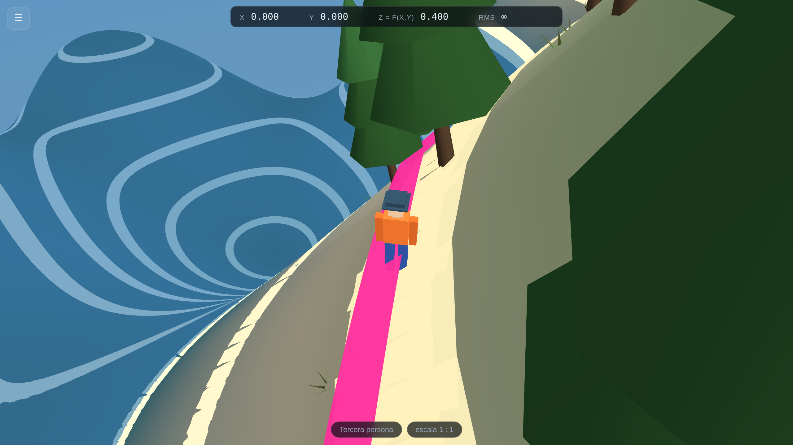
Recta tangente a esa curva K — la tangente a esa curva de nivel a
los pies del explorador, en magenta, proyectada sobre la superficie para que se pegue al terreno
en vez de quedar flotando. Como una curva de nivel mantiene f constante, su dirección
tangente es perpendicular a ∇f, y la recta proyectada se separa de la curva solo en
segundo orden: las dos van juntas cerca del explorador y se apartan despacio más allá. Encoja al
explorador con el dial de escala y se vuelven a juntar, que es justamente lo que significa
«tangente».
Ahora son dos secciones del panel. El plano tangente es una afirmación sobre la gráfica de una función y se apaga en los otros dos tipos de superficie; la escala del explorador no lo es, y sigue activa en todas partes: un explorador sobre un toro tiene un tamaño, y todo lo que se mide contra él —los cuadrados de la retícula incluidos— cambia con él.
Plano tangente P — dibuja el plano que mejor se ajusta a la superficie a los pies del explorador.
Cambia el tamaño del explorador un factor de diez por muesca. Hacia la derecha se encoge: 1,8 m, luego 18 cm, 1,8 cm, 1,8 mm y finalmente 0,18 mm. Hacia la izquierda crece, hasta diez veces su tamaño natural, 18 m, que es la escala que conviene cuando el rasgo de la superficie que se está estudiando es más grande que una persona. La cámara, la velocidad al caminar y el disco de medición cambian con él, así que desde el punto de vista del explorador no pasa nada; pero el trozo de superficie que ocupa se vuelve cien, mil, diez mil veces más pequeño. La actividad 8 de la parte 7 explica por qué esto importa.
La rueda del ratón hace lo mismo, igual que al acercar un mapa, de modo que puede cambiar de escala sin volver al panel. En un trackpad de Mac, use el gesto de pellizco.
Mostrar el óptimo O — encuentra el punto más alto de la superficie dentro del conjunto factible y lo marca con un anillo dorado y un haz de luz visible desde cualquier parte. El informe de abajo da el valor máximo, dónde está, si queda en el interior o en la frontera, y el tamaño del gradiente allí.
Teletransportarse al óptimo — lleva al explorador a ese punto al instante.
Tres maneras de estar en la escena.
Cámara del dron — aparece solo en modo dron y ofrece la misma elección un nivel más arriba: primera persona lo pone dentro del aparato, tercera persona pone la cámara detrás para que se vea el dron mismo.
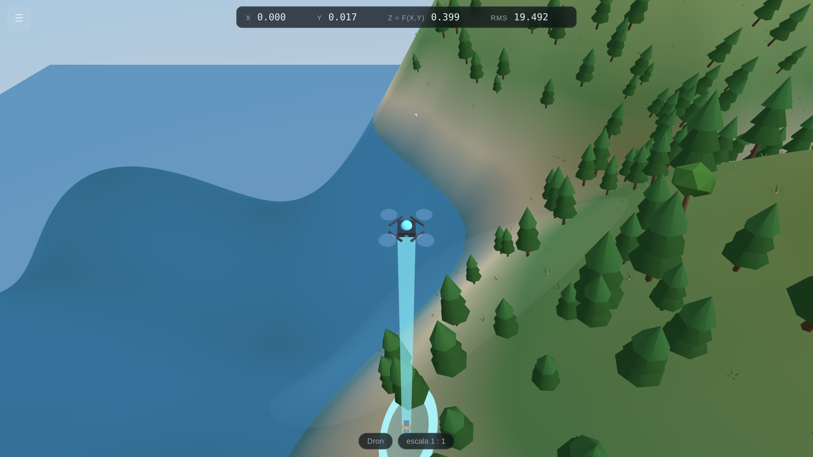
z = 0, y el anillo brillante donde aterriza es el
punto del dominio sobre el que está el dron: aquí, todavía el sitio del que despegó.El dron vuela nivelado. W A S D lo desplazan sobre
el plano (x, y), Espacio y Ctrl fijan su altitud, y el ratón
solo apunta la cámara: puede mirar directamente hacia abajo y aun así cruzar el dominio a altura
constante, cosa muy difícil con una cámara que se lanza en picado hacia donde uno mira. Colgando
de él hay un haz luminoso, perpendicular al plano z = 0, que termina en un anillo
brillante sobre la superficie: ese anillo es el punto del dominio sobre el que está, y mirarlo es
la forma de no perder el rumbo mientras vuela.
Aspecto del explorador — excursionista, figura de bloques, estilo píxel o amigo redondo. Los cuatro miden exactamente 1,80 m, así que la referencia de escala nunca cambia.
Mirar desde arriba T lleva el dron justo encima, lo que proyecta la
superficie sobre el plano z = 0: la vista de mapa plano. Volver al
centro R rescata a un explorador que se haya perdido.
Indicador de dirección I — el pequeño globo de la esquina superior derecha. En una vista en primera persona de una superficie sin puntos de referencia —el interior de un toro, una banda de Möbius, un paraboloide a una parte en diez mil— es realmente fácil perder de vista hacia dónde se está mirando, y perderlo hace más difícil leer cualquier número de la pantalla. El globo lo responde: una jaula de paralelos y meridianos con una figurita dentro, orientada igual que la cámara, y debajo el rumbo y la elevación en cifras. En modo dron la figura pasa a ser la aeronave, con su objetivo apuntando adonde apunta la cámara.
Mantenga ⌘ (⊞ en Windows) o Alt, o pulse Esc y mueva el ratón, y se agranda: esos son los momentos en que uno lo consulta en vez de mirarlo de reojo. Los hilos de la cara oculta del globo se dibujan tenues, para que se lea como un globo y no como un tapete plano; cuando la mirada se aleja del lector se ve la nuca de la figura.
El aplanamiento envía los tres ejes a x → (1, 0), z → (0, 1) e
y → (sen 0,9, cos 0,9), de modo que «adelante» sube hacia la derecha unos 38° sobre la
horizontal y «atrás» baja hacia la izquierda. Es una proyección oblicua y no ortográfica —las seis
direcciones cardinales caen sobre la circunferencia unidad, pero las diagonales la rebasan—, así
que la jaula es una elipse y no un círculo. Eso es una consecuencia real de dibujar el eje de
profundidad en ángulo sin escorzarlo, y es lo que impide que «adelante» se derrumbe dentro del
marco.
Escriba en la caja f(x, y) = y presione Enter. La notación es la
corriente, la que usaría en una calculadora o en una hoja de cálculo, con dos comodidades
añadidas.
Cualquier mando con distribución de Xbox controla al explorador directamente, también en un iPhone o iPad, por Bluetooth y sin instalar nada. Los navegadores exponen los mandos mediante una interfaz estándar, y Safari lo hace desde iOS 10.3, con soporte completo para los mandos modernos desde la 14.5. El stick izquierdo camina y se desplaza de lado; el derecho mira y gira; ambos funcionan igual en una gráfica, en una esfera y en una superficie implícita.
| Stick izquierdo | caminar y desplazarse de lado | Stick derecho | mirar y girar el rumbo |
|---|---|---|---|
| RT | esprintar | LB / RB | dron abajo / arriba |
| A | vista siguiente: primera, tercera, dron | B | la vecindad |
| X | la rejilla de coordenadas | Y | el mapamundi |
| Cruceta ↑ ↓ | la escala del explorador | Cruceta ← → | zoom de la cámara |
| Start | mostrar u ocultar el panel |
La sección Vista muestra qué mando se ha detectado, por su nombre. Si dice que no hay ninguno, pulse un botón del mando: por privacidad, los navegadores mantienen oculto un mando hasta que se pulsa uno, así que un mando emparejado y en funcionamiento sigue apareciendo como ausente hasta que lo toca. Allí hay también un interruptor para invertir el arriba y abajo del stick derecho, que se recuerda entre sesiones.
Un stick llevado al tope camina exactamente a la misma velocidad que mantener W, así que ninguna de las medidas cambia por haber cogido un mando. La zona muerta se mide como distancia al centro y no en cada eje por separado —que es lo que evita que un empujón suave en diagonal no registre nada— y la respuesta es curva, de modo que los movimientos pequeños cerca del centro son finos y el borde sigue dando velocidad máxima.
Una advertencia sobre los mandos telescópicos económicos, incluidos algunos modelos de Machenike: muchos tienen un selector de modo y, en modo «teclado», envían letras en vez de presentarse como mando. En ese modo la línea de la sección Vista seguirá diciendo que no hay ningún mando, pero es muy probable que el mando funcione igualmente, porque está enviando W A S D y las flechas, a los que este programa ya responde. Si un modo no hace nada, pruebe el otro.
Velocidad al caminar, en la sección Vista, multiplica el paso normal, desde aproximadamente un cuarto hasta veinticinco veces. El paso ya se mide en alturas del explorador por segundo, así que un explorador diez veces más pequeño recorre el mismo terreno en el mismo tiempo; esto es para cuando quiere llegar al otro lado de un toro sin narrar el viaje. Mantener Mayús sigue esprintando por encima.
| Símbolo | Significado | Ejemplo |
|---|---|---|
+ - * / | sumar, restar, multiplicar, dividir | x/2 - y |
^ | elevar a una potencia | x^2, x^0.5, x^-1 |
( ) | agrupación | (x+y)^2 |
| | | valor absoluto | |x-y| |
pi, e | las constantes de siempre | sin(pi*x) |
Escriba 0.5, no 0,5. La coma se usa para separar los argumentos de
una función, como en max(x, y), así que 0,5 se leería como dos
números distintos.
Puede omitir el signo de multiplicación. 2x significa
2*x, x y significa x*y y 3(x+y) significa
3*(x+y).
Las potencias se agrupan primero. -x^2 es
-(x^2), no (-x)^2: la misma convención de sus apuntes de clase.
sin cos tan asin acos
atan atan2 sinh cosh tanh
exp ln log log2 log10
sqrt cbrt abs sign floor
ceil round min max pow
hypot mod clamp step gauss
Los nombres están en inglés porque son los mismos que usan las calculadoras y las hojas de
cálculo: sqrt es la raíz cuadrada, ln el logaritmo natural y
abs el valor absoluto. hypot(a,b) es sqrt(a^2+b^2).
gauss(t) es la campana e^(-t²/2); gauss(t, centro, ancho)
la desplaza y la estira.
| Escriba esto | Obtiene |
|---|---|
(x*y)^0.5 | La superficie de Cobb–Douglas. No está definida a menos que x y y sean ambos positivos o ambos negativos. |
x^0.3*y^0.7 | Cobb–Douglas con participaciones desiguales. |
1-x^2-y^2 | Una cúpula. Un único máximo interior limpio en el origen. |
x^2-y^2 | Una silla de montar. Útil para mostrar un punto donde el gradiente se anula sin que haya máximo. |
sin(3x)*cos(3y)/2 | Un cartón de huevos: muchos máximos locales. |
0.6*sin(2x)+0.4*cos(3y)+0.3*x*y | Colinas onduladas con lagos. La más bonita para caminar. |
-(x^2+y^2)^0.5+1 | Un cono. La punta es un máximo donde la función no es diferenciable — vea la actividad 8. |
x*y*exp(-(x^2+y^2)) | Cuatro picos y valles alternados. |
| Usted escribe | Usted ve | La solución |
|---|---|---|
sin(x | Falta un «)» después de sin( (en el carácter 6) | Cierre el paréntesis. |
x*yy | Nombre desconocido «yy» (en el carácter 3) | Solo x y y son variables. |
2+ | La expresión termina antes de tiempo | Falta algo después del +. |
sin | «sin» es una función: escriba sin(...) | Déle un argumento. |
(x*y)^0.5 no tiene valor real cuando x y y tienen
signos opuestos. Grafíquela sobre un dominio que cruce los ejes y dos cuadrantes saldrán
vacíos, y el explorador no podrá caminar hacia ellos. Abajo aparece un aviso
que le dice qué fracción del dominio queda indefinida. Esto no es un defecto que haya que
sortear: es una imagen genuinamente útil del dominio de una función.
La caja restricciones recibe desigualdades en x y y.
Todo lo que las satisface es el conjunto factible: la región donde debe hallarse el máximo.
| Símbolo | Significado |
|---|---|
<= >= | menor o igual, mayor o igual |
< > | estrictamente menor, estrictamente mayor |
&& | y — ambas condiciones deben cumplirse |
|| | o — basta con cualquiera |
! | no |
Puede encadenar comparaciones tal como las escribiría a mano: 0 <= x <= 1
significa exactamente lo que parece. Dejar la caja vacía significa «sin ninguna restricción».
| Escriba esto | Obtiene |
|---|---|
x>=0 && y>=0 && x+y<=2 | Un triángulo — el conjunto presupuestal clásico. |
x^2+y^2<=1 | Un disco de radio 1. |
x+y<=2 && 2x+y<=3 && x>=0 && y>=0 | Dos rectas de presupuesto a la vez: una región de cuatro lados. |
x*y>=0.3 && x+y<=2.5 | Una restricción curva contra una recta. |
0<=x<=1.5 && 0<=y<=1.5 | Un rectángulo, escrito con comparaciones encadenadas. |
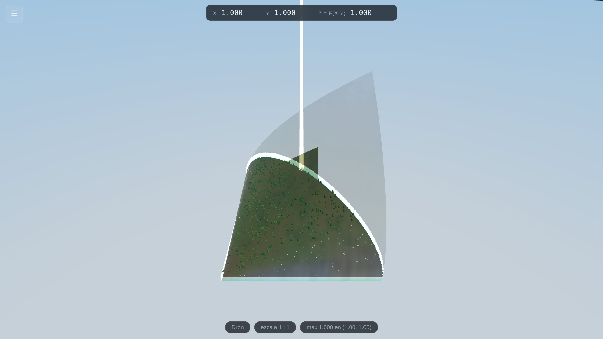
x>=0 && y>=0 && x+y<=2 con las dos
casillas del conjunto factible activadas. El triángulo permitido es suelo sólido con su
decorado; todo lo de afuera se ha vuelto un fantasma. El haz de luz marca el máximo con
restricciones.Una por cada función del programa. Cada una toma de cinco a diez minutos y termina en algo que los estudiantes pueden enunciar con palabras.
Preparación: el programa tal como se abre.
Haga: mire la superficie desde el dron. Presione 2 y camine cuesta
arriba. Pida a la clase que diga en voz alta qué está haciendo z mientras sube, y
luego que diga qué es z.
La idea: la altura del suelo bajo sus pies es el valor de la función en el punto donde está parado. Todo lo demás en el curso es una afirmación sobre este paisaje.
Haga: desde el aire, note que la montaña se ve perfectamente suave. Ahora apague y encienda Vegetación, rocas y nieve.
La idea: los árboles y las rocas están colocados sobre la superficie; nunca cambian su forma. Una función diferenciable no tiene esquinas por más que uno se acerque, pero las montañas reales están cubiertas de cosas que sí las tienen. Poder separar ambas cosas merece un minuto de discusión.
Preparación: restricciones x>=0 && y>=0 && x+y<=2.
Active Mostrar los muros de la frontera y Volver translúcido lo que está
afuera.
Haga: camine hasta el muro e intente mirar por encima. Pregunte: ¿en qué punto de este triángulo está más alto el suelo?
La idea: un problema de optimización con restricciones es una pregunta sobre una región, no sobre una fórmula. Los estudiantes que pueden ver la región rara vez se equivocan después en la geometría.
Haga: alterne entre 1, 2 y 3, y luego presione T para mirar desde arriba.
La idea: la vista desde arriba es la imagen plana del libro de texto. Mostrarles que es el mismo objeto visto desde otro punto disuelve una cantidad sorprendente de confusión sobre los diagramas de curvas de nivel.
Preparación: active Curvas de nivel C y Colores topográficos M.
Haga: párese sobre una curva de nivel y camine a lo largo de ella,
vigilando z en la lectura. Luego cruce las curvas y vea cómo cambia rápidamente.
La idea: una curva de nivel es donde la función no cambia. Recorrer una y ver el número quieto lo vuelve concreto. Presione T después y esas mismas curvas se convierten en un mapa de contornos corriente.
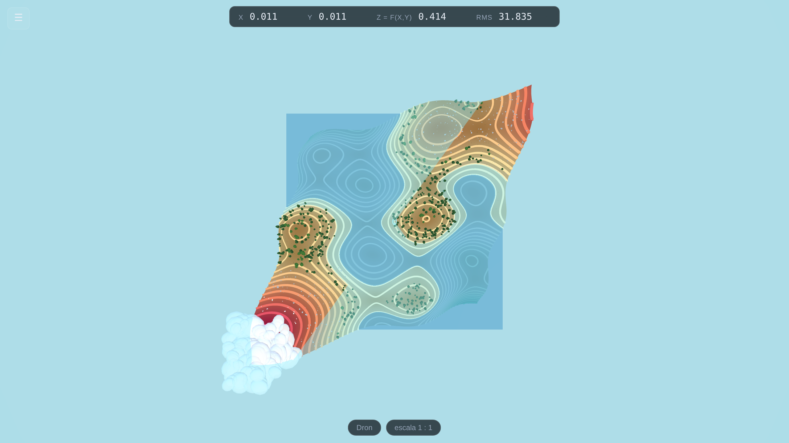
Preparación: f(x,y) = (x*y)^0.5. Active
∂f/∂x X, ∂f/∂y Y y
Gradiente V. Camine hasta cerca de (1, 1).
Haga: lea las tres etiquetas. En (1,1) dicen
∂f/∂x = 0.500, ∂f/∂y = 0.500, ‖∇f‖ = 0.707. Compruébelo a
mano: las derivadas parciales de √(xy) en (1,1) valen ambas
½, y √(¼+¼) = 0.707.
Luego: señale que la flecha turquesa del gradiente queda exactamente entre la azul y la roja, y que es la forma más empinada de subir. Camine a otro punto y vea cómo giran las tres.
La idea: el gradiente no es un accidente algebraico, es una dirección que se puede ver y recorrer.
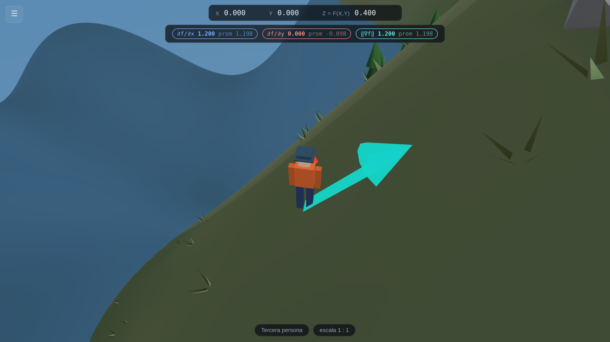
Preparación: active Derivada direccional B.
Haga: el explorador queda inmóvil. Gire el ratón despacio y observe Duf en la etiqueta. Encuentre la dirección en que es mayor: cae sobre el gradiente. Encuentre dónde vale cero.
La idea: la dirección de derivada direccional nula es la curva de nivel, perpendicular al gradiente. Los estudiantes suelen aprender eso como una fórmula; aquí lo encuentran con la mano en unos quince segundos.
Preparación: active Plano tangente P. Deje la regla de acercamiento en 1:1.
Haga: note que el plano amarillo coincide con la superficie bajo los pies pero se despega de ella unos metros más allá. Ahora arrastre la regla de acercamiento una muesca a la vez y observe lo que ocurre.
La idea: en 1:1000 la superficie y su plano tangente son indistinguibles. Eso
es la diferenciabilidad: no una fórmula, sino el hecho de que un trozo suficientemente
pequeño de la superficie es un plano. Continúe con el cono -(x^2+y^2)^0.5+1 y
acérquese a la punta: sigue siendo un pico por más que se acerque. Así se ve un punto no
diferenciable.
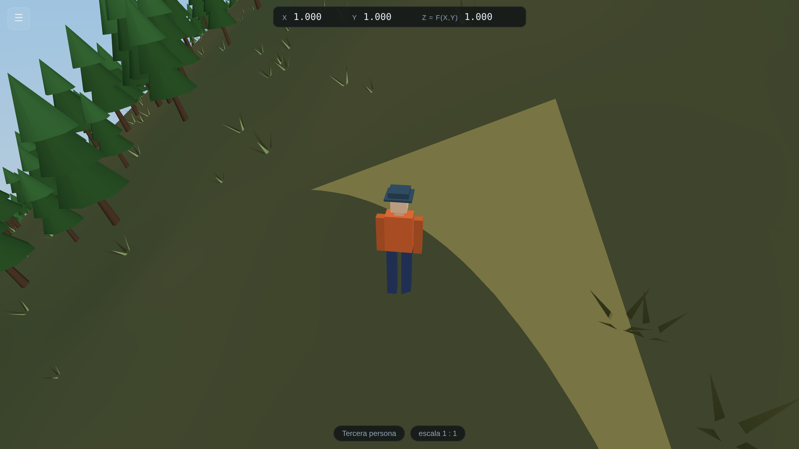
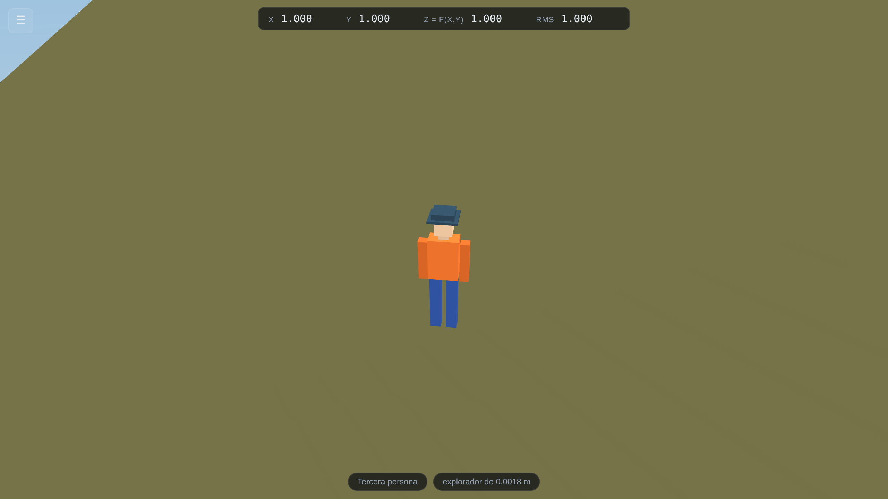
Preparación: f(x,y) = (x*y)^0.5, restricciones
x>=0 && y>=0 && x+y<=2, Mostrar los muros de la
frontera activado, Mostrar el óptimo O activado.
Haga: lea el informe. Dice que el máximo es 1.0000 en
(1.0000, 1.0000), que queda en la frontera del conjunto factible, y
que ‖∇f‖ allí vale 0.7071 — no cero. Teletranspórtese hasta
allí, active la flecha del gradiente y véala apuntando directo contra el muro.
Luego: desactive el conjunto factible y presione O otra vez. El máximo salta a la esquina lejana del dominio.
La idea — y es la razón por la que existe este programa: en un máximo sin restricciones el suelo se aplana y el gradiente muere. En un máximo con restricciones no tiene por qué: el suelo sigue subiendo, y lo que lo detiene a usted es la frontera. Los estudiantes que han estado parados en ese punto y han visto la flecha del gradiente clavada contra el muro no vuelven a escribir «igualo el gradiente a cero» en un problema con restricciones.
Prepare: f(x,y) = (x*y)^0.5 sobre [0,2]²,
Curva de nivel sobre la que está parado J activada, su recta
tangente K activada, tercera persona.
Haga: Mire la cifra RMS de arriba mientras camina a lo largo de la
curva de nivel sobre la que está parado. No se mueve: una curva de nivel de
f = (xy)1/2 es una hipérbola equilátera xy = c, y sobre ella
RMS = |y/x|, que es la pendiente del rayo alrededor del cual camina, no la del camino
bajo sus pies. Ahora camine a través de las curvas, directo por el gradiente, y sigue casi
sin moverse: para esta función la relación depende solo del cociente y/x.
Luego: vaya al punto (1, 1). RMS = 1: una unidad de
x sustituye exactamente a una unidad de y. Camine hasta donde
x sea cuatro veces y y marcará 0.25. Pida a la clase que
prediga la lectura antes de cada movimiento.
El punto: la relación marginal de sustitución no es una fórmula extra pegada a las derivadas: es la pendiente de la curva de indiferencia, y esa curva de indiferencia es un camino que el estudiante acaba de recorrer. En el óptimo con restricciones de la actividad 9 ese número iguala la razón de precios, y ambas cosas se ven en el mismo cuadro: la tangente a la curva de nivel y el muro de la frontera quedan pegados uno contra otro.
Todo lo anterior ha sido una gráfica: una altura z sobre cada punto
(x, y). Es una restricción fuerte, y la rompen casi todas las superficies que le
importan a un curso de geometría. Una esfera tiene dos alturas sobre el mismo punto. Un toro,
cuatro. Una banda de Möbius no tiene siquiera una noción coherente de «arriba».
El menú Tipo de superficie, al comienzo del panel, ofrece otras dos maneras de escribir una.
Todos los puntos del espacio donde se satisface una ecuación. x^2+y^2+z^2-1 es la
esfera unitaria; (sqrt(x^2+y^2)-1)^2+z^2-0.16 es un toro. No hay función de altura,
así que no hay curvas de nivel ni ∂f/∂x; pero sí hay una normal, a saber
∇F, y donde hay normal se puede estar de pie.
Una hoja barrida por dos parámetros. El menú Superficie con nombre completa
nueve de ellas con diales para sus propios parámetros: esfera, toro, pseudoesfera, hiperboloide de
una hoja, catenoide, helicoide, banda de Möbius, botella de Klein y cross-cap. Elegir una escribe
sus fórmulas en las mismas cajas X(u,v), Y(u,v), Z(u,v) en
las que usted podría haberlas escrito, de modo que una superficie con nombre es un ejemplo
resuelto y no un modo oculto. Modifíquelas después y vea qué pasa.
Haga clic sobre la superficie. Esa es toda la interfaz. Una superficie implícita no tiene un punto de partida natural, y el origen de parámetros de una paramétrica es un artefacto de cómo alguien la escribió, así que lo honesto es dejarlo elegir a usted. El explorador aterriza exactamente donde hizo clic y la vista pasa a tercera persona.
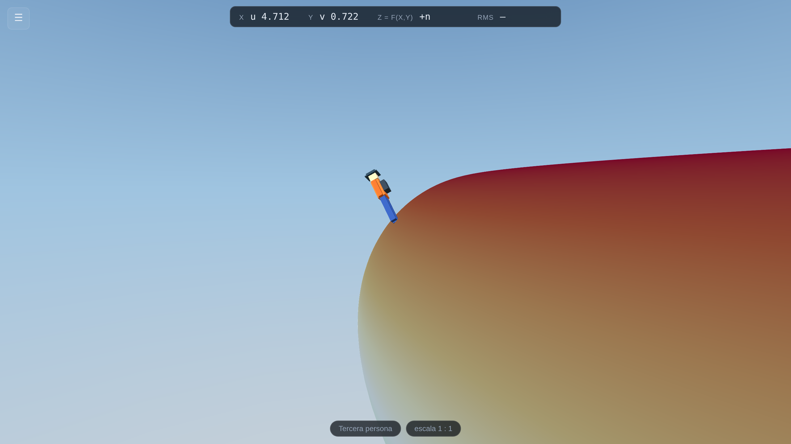
Después W S caminan, A D se desplazan de lado, el ratón gira y la rueda aleja la cámara. 1 son los ojos del explorador, 2 la cámara que lo mira, 3 el dron.
Arriba es la normal al plano tangente. Esa sola decisión es lo que hace que una esfera se sienta como un planeta y no como una pelota por la que uno resbala: el horizonte se inclina con el suelo, porque en una esfera así ocurre. Hacia dónde queda arriba permite fijarlo a un eje del mundo, para quien encuentre más difícil de leer un horizonte que da vueltas que uno fijo.
Un paso de longitud dada en los parámetros no es un paso de longitud dada sobre la
superficie: cerca del polo de una esfera, un paso en longitud recorre casi nada de terreno.
Moverse a velocidad constante exige entonces resolver la primera forma fundamental
[E F; F G](du,dv)ᵀ = (ru·w, rv·w)ᵀ en cada paso. En una
superficie implícita no hay carta alguna: el paso se da en el plano tangente y luego se devuelve
a F = 0 por el método de Newton a lo largo de ∇F. Ninguno de los dos
es caro, y ambos son la razón de que el explorador se quede sobre la superficie en vez de irse
apartando de ella.
En una gráfica uno camina por el plano y la superficie sube y baja por debajo. En un toro no hay plano por el que caminar, y «recto hacia adelante» necesita una definición. La que se usa aquí es la única que no depende de cómo escribiera nadie la superficie: el explorador sigue la geodésica que pasa por donde está, con su velocidad como condición inicial —el camino más recto que la superficie permite—. En una esfera eso es un círculo máximo. En un plano, una recta. En un toro es una de toda una familia que en general nunca se cierra, y ver una dar vueltas y vueltas sin repetirse jamás da para una clase entera.
Girar es una rotación de la velocidad dentro del plano tangente; caminar es la geodésica que esa velocidad inicia. Entre las dos cosas, el rumbo se transporta paralelamente: se lleva a cuestas sin ninguna rotación alrededor de la normal, que es lo que tiene que significar llevar una dirección a lo largo de un camino cuando no hay ninguna dirección fija con la que compararla. Dé una vuelta completa a un círculo máximo y el rumbo vuelve exactamente como salió. Dé una vuelta cerrada que no sea geodésica —un paralelo, por ejemplo— y no vuelve igual, y el ángulo que ha girado es la holonomía: el área encerrada, por la curvatura. Eso es el teorema de Gauss–Bonnet, y el explorador puede recorrerlo a pie.
Caminar por dentro cambia la cara de la superficie sobre la que se para el explorador. En una esfera o un toro esa es una elección real: la superficie tiene dos caras y se puede estar en cualquiera. La nota bajo el menú dice qué clase de superficie eligió.
En una banda de Möbius la casilla queda deshabilitada, y la razón es la lección. La banda tiene una sola cara. Dé una vuelta completa y el explorador vuelve de cabeza, parado sobre lo que usted habría llamado la otra cara, sin haber cruzado ningún borde. Eso es ser no orientable, y cuesta mucho más no creerlo cuando uno acaba de caminarlo.
La botella de Klein y el cross-cap traen una segunda advertencia: son inmersiones tridimensionales. La superficie se atraviesa a sí misma porque el encaje verdadero necesita una cuarta dimensión para quitarse de en medio. Caminar a través de la intersección es el precio de dibujarla en una sala.
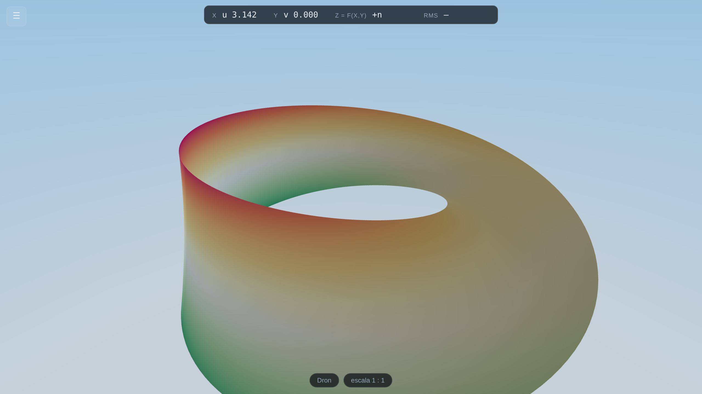
Prepare: Paramétrica → Banda de Möbius. Haga clic en el medio de la cinta. Tercera persona.
Haga: Fíjese hacia dónde apunta la cabeza del explorador respecto de la
cámara. Mantenga W y recorra toda la banda mirando la lectura: la cifra u
sube hasta 2π y vuelve a cero. Mire al explorador.
El punto: nada se dio vuelta, nada cruzó un borde, y el explorador está de cabeza. «Esta superficie tiene una sola cara» deja de ser una frase que memorizar.
Marque Problema del consumidor al comienzo del panel y el programa empieza a hablar en economía. Nada de la matemática cambia —eso es justamente lo que se quiere mostrar—, pero las palabras en pantalla pasan a ser las que usa un curso de microeconomía.
| En general | En el problema del consumidor |
|---|---|
la función f(x, y) | la función de utilidad u(x, y) |
| el conjunto factible | el conjunto presupuestario |
| curvas de nivel | curvas de indiferencia |
RMS en la lectura | TMS, la tasa marginal de sustitución |
| el máximo con restricciones | la canasta óptima del consumidor |
Función de utilidad — Cobb–Douglas, CES, sustitutos perfectos o cuasilineal. Participación a es el exponente, el peso o el parámetro de elasticidad según cuál haya elegido; la etiqueta cambia para decir cuál. precio de x, precio de y e ingreso son lo que dicen.
Cambiar cualquiera de ellos reescribe dos cajas que usted puede ver: la utilidad va a
f(x, y) = y el conjunto presupuestario a la caja de restricciones como
x>=0 && y>=0 && px*x+py*y<=m. El
dominio se reencuadra sobre el conjunto presupuestario para que la frontera se vea en vez de
quedar pegada al borde del mundo. No hay nada escondido: el estudiante puede leer la fórmula que
produjeron los diales, cambiarla a mano y ver que «el problema del consumidor» es una
f particular sobre un conjunto factible particular.
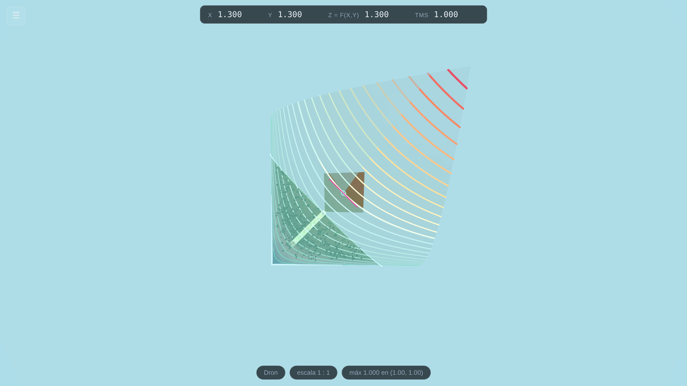
Prepare: Problema del consumidor activado, Cobb–Douglas, a = 0,5,
px = py = 1, m = 2. Active Mostrar el
óptimo, Curva de indiferencia sobre la que está parado y su
recta tangente.
Haga: Lea el informe: el máximo es 1,0000 en
(1,0000, 1,0000), en la frontera. Teletranspórtese allí. Lea TMS: vale
1,000, y también px/py. Mire la tangente a la
curva de indiferencia y el muro presupuestario: quedan pegados uno contra otro.
Luego: ponga px = 3. El óptimo se mueve a
(0,333, 1,000) —el m/2px, m/2py del
libro— y en esa canasta TMS vale 3, la nueva razón de precios. Pida a la
clase que prediga la siguiente antes de que usted gire el dial.
El punto: «en el óptimo la TMS iguala la razón de precios» suele ser una línea de álgebra. Aquí es una imagen de dos rectas superpuestas, en un punto al que el estudiante caminó.
Hay una segunda versión del programa, lab.html, a la que se llega por el enlace
del final de la sección de Ayuda (y se vuelve por el mismo sitio). Es el mismo programa, con los
mismos controles haciendo lo mismo. Dos diferencias.
Los controles se quitan de en medio. La barra es más angosta y más discreta, la tecla Tab la oculta por completo y el botón ⛶ junto al selector de idioma pasa a pantalla completa, de modo que también desaparecen las pestañas y la barra de direcciones del navegador. Lo que queda es la superficie.
Un panel en la esquina muestra la figura que dibuja su libro de texto. El dominio visto desde arriba, con las mismas curvas de nivel en los mismos colores, la misma recta tangente en el mismo magenta y el explorador como un punto exagerado. Todo lo que hay en él es el mismo estado de la escena de atrás, así que caminar en la vista 3D camina el punto sobre el mapa.
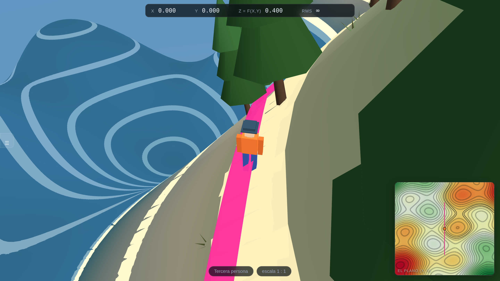
Mapa de calor con la rampa de las curvas de nivel — la opción por defecto. El fondo se colorea con la misma rampa de diez colores que las curvas y la superficie, de modo que un color significa la misma altura en los tres sitios.
Mapa de calor clásico — de azul a rojo pasando por verde, la paleta que el estudiante habrá visto en cualquier otro mapa de calor. Deliberadamente distinta, para que no se confundan.
Vista cenital de la superficie — no es un dibujo, sino la escena misma
renderizada desde arriba dentro del mismo rectángulo. Árboles, agua, muros de la frontera y el
explorador, vistos como un mapa. Esta es la versión honesta de «proyectar la superficie sobre
z = 0»; los modos dibujados son la idealizada.
Nada — ocultar el panel.
Opacidad del panel y Tamaño del panel hacen lo que dicen. Por defecto ocupa un tercio del alto de la ventana por un quinto de su ancho. El panel nunca intercepta un clic: es una lectura, no un control, y el ratón lo atraviesa hasta la escena.
Prepare: el Laboratorio, cualquier función con relieve real, curvas de nivel activadas, la curva bajo sus pies activada, tercera persona.
Haga: Camine a lo largo de la curva de nivel bajo los pies del explorador, en
la vista 3D, manteniéndose a la misma altura. Mire el punto en el panel: traza un lazo cerrado, y
la z de la lectura no se mueve.
Luego: camine derecho por el gradiente, cruzando una curva tras otra. En el panel el punto atraviesa los anillos.
El punto: la figura plana del libro y la ladera bajo sus pies son el mismo objeto. A casi todos los estudiantes se lo dicen. Aquí pueden verlo.
Cuatro maneras, de la más fácil a la más elaborada. La opción A no requiere nada; la opción D le da una dirección web permanente. Las cuatro son gratuitas.
Envíe Gradient-Peaks.html como adjunto de correo, o déjelo en la carpeta del curso,
o póngalo en una memoria USB. Los estudiantes hacen doble clic. Ese es todo el procedimiento.
Algunos sistemas de correo eliminan o bloquean los adjuntos .html. Si no llega,
ponga el archivo en una unidad compartida (OneDrive, Google Drive, Dropbox) y envíe el enlace —
pero dígales a los estudiantes que lo descarguen y luego lo abran, no que lo
vean en la vista previa del navegador, porque algunos visores muestran el texto del archivo en
lugar de ejecutarlo.
Moodle, Canvas, Blackboard y sus parientes aceptan subir un archivo. Añada
Gradient-Peaks.html como recurso. Los estudiantes hacen clic y funciona.
Esto le da un enlace que puede poner en una diapositiva. No hace falta crear una cuenta para empezar.
app.netlify.com/drop en su navegador.website —la carpeta entera, no los
archivos de adentro— sobre el recuadro punteado de esa página.https://cheerful-lion-12ab34.netlify.app.Cree una cuenta gratuita dentro de las 24 horas si quiere conservar la dirección de forma
permanente o ponerle un nombre más amable. Recuerde que puede añadir ?lang=es al
final del enlace para que abra en español.
Más pasos, pero la dirección no caduca y actualizarla después es fácil. Si el proyecto ya vive en un repositorio de GitHub:
github.com..github/workflows/pages.yml)
publica la carpeta app/ automáticamente en cada envío a la rama principal.https://<su-usuario>.github.io/<repositorio>/.Para las opciones C y D se publica la carpeta website/, porque un
servidor web de verdad sí puede entregar correctamente sus archivos por separado. Las opciones
A y B usan en cambio el archivo único Gradient-Peaks.html. Ambos contienen el mismo
programa.
Una vez que el programa está en una dirección web (opciones C o D de arriba), se puede instalar como una aplicación: con su propio ícono, su propia ventana, sin barra del navegador, y funciona sin conexión después. No hay tienda de aplicaciones de por medio, ni pago, ni cuenta de desarrollador.
| Dispositivo | Cómo |
|---|---|
| iPhone / iPad | Abra la dirección en Safari (esto no funciona en Chrome en iOS). Toque el botón Compartir —el cuadrado con una flecha—, baje y toque Añadir a pantalla de inicio. |
| Android | Abra la dirección en Chrome. Toque el menú de tres puntos y luego Instalar aplicación o Añadir a pantalla principal. |
| Windows | Abra en Chrome o Edge. Haga clic en el pequeño ícono de instalación al final de la barra de direcciones (un monitor con una flecha) y luego en Instalar. |
| macOS | En Chrome o Edge, el mismo ícono de instalación. En Safari, elija Archivo → Añadir al Dock. |
Después de instalarlo, el programa guarda una copia de sí mismo en el dispositivo. Los estudiantes pueden usarlo en el bus sin señal.
| Lo que usted ve | Por qué | Qué hacer |
|---|---|---|
Una página en blanco o negra, y usted abrió website/index.html |
Los navegadores no permiten que una página abierta desde el disco duro cargue sus propios archivos por separado. | Abra Gradient-Peaks.html en su lugar. Para eso existe. |
| Se queda en «Construyendo el terreno…» más de unos 20 segundos | La resolución de la malla es demasiado alta para este computador, o la función es muy lenta de evaluar. | Recargue la página. Baje Resolución de la malla a 100 antes de cambiar cualquier otra cosa. |
| Desapareció el puntero del ratón y no puede hacer clic en nada | No pasa nada malo: el programa tomó el ratón para poder girar su cabeza. | Presione Esc. |
| Escribir en la caja de la función activa ajustes | El cursor no está realmente dentro de la caja. | Haga clic directamente dentro de la caja primero. Mientras tenga el cursor, las letras se escriben con normalidad. |
| Un mensaje rojo bajo la caja de la función | No se pudo leer la fórmula. El mensaje nombra el carácter donde falló. | Vea la tabla de errores de la parte 5. El paisaje anterior sigue en pantalla y sigue siendo utilizable. |
| Faltan trozos grandes del terreno | La función no tiene valor real allí — por ejemplo, sqrt de un número
negativo. |
No hay nada que corregir. Cambie el dominio si quiere una superficie completa; el aviso de abajo le dice cuánto queda indefinido. |
| Todo se mueve a saltos | La tarjeta gráfica del computador no da abasto. | Parte 14, en el orden que allí se indica. |
| El explorador no se mueve | Derivada direccional está activada. Deja inmóvil al explorador a propósito. | Desactívela con B. |
| La pantalla está llena de un color sólido | La cámara está dentro del terreno o pegada contra un muro de la frontera. | Presione R para volver al centro, o 3 para salir volando con el dron. |
| «WebGL is not available» o algo parecido | La aceleración gráfica está desactivada en el navegador. | En Chrome o Edge: Configuración → Sistema → active Usar aceleración de gráficos cuando esté disponible y reinicie el navegador. En máquinas muy restringidas, consulte con sistemas. |
Cambie estas cosas en orden y deténgase apenas se sienta fluido. Las dos primeras casi no le cuestan nada.
Todos los ajustes de esta parte cambian solo cómo se dibuja el paisaje. Las derivadas, el gradiente y el óptimo se calculan a partir de la fórmula misma, así que los números en pantalla son idénticos con los ajustes más bajos y con los más altos.
Para colegas y para los departamentos de sistemas que quieran saber qué se les está pidiendo permitir.
Sin instalador, sin servicio en segundo plano, sin permisos de administrador. Nunca envía nada a ninguna parte: no tiene código de red más allá de cargar sus propios archivos. No se recoge, ni se almacena, ni se transmite nada.
La caja de la fórmula la lee un analizador matemático hecho a propósito. Solo puede producir un
número y nada más: no hay ningún eval en todo el programa. Un estudiante no puede
escribir algo en la caja de la función que haga al programa hacer otra cosa que dibujar una
superficie.
Las tres escalas de los ejes empiezan en 1, de modo que una unidad de x, una de
y y una de z miden lo mismo y la pendiente que usted ve es la pendiente
que el programa reporta. (Mover cualquiera de los tres diales rompe eso a propósito, y por eso
están rotulados como cambios solo de imagen y empiezan en 1.) La vecindad, y toda flecha dibujada
en ella, se mide como longitud de arco sobre la superficie —la longitud que la métrica ambiente le
asigna al camino—, mientras que las derivadas reportadas son las derivadas parciales de siempre,
sin alterar. El óptimo se halla recorriendo el conjunto factible y refinando después los mejores
candidatos, y todo punto de prueba debe satisfacer las restricciones, que es la razón por la que
un máximo en la frontera se encuentra correctamente.
El programa se publica bajo la licencia MIT: úselo, modifíquelo y entrégueselo a sus estudiantes
libremente. Usa una biblioteca externa, three.js (también MIT, © los autores de
three.js), cuyo texto de licencia viaja con los archivos en website/vendor/.
Una página. Imprímala y déjela junto al proyector.
| Tecla | Hace |
|---|---|
| W A S D | Caminar o volar |
| Shift | Mantener para ir más rápido |
| Espacio / Ctrl | Altitud del dron, sube / baja |
| ratón | Mirar alrededor (haga clic en la escena primero) |
| rueda | Zoom de la cámara — el tamaño del explorador no cambia |
| ⌘/⊞/Alt + rueda | Tamaño del explorador (la regla de acercamiento) |
| ⌘/⊞/Alt + WASD o flechas | Mirar alrededor sin el ratón |
| Esc | Soltar el puntero del ratón |
| Tab | Ocultar o mostrar el panel de control |
| 1 / 2 / 3 | Primera persona / tercera persona / dron |
| T | Mirar desde arriba (vista de mapa) |
| R | Volver al centro |
| I | Indicador de dirección (el globo, arriba a la derecha) |
| C | Curvas de nivel |
| M | Colorear la superficie por altura |
| N | Retícula de coordenadas sobre la superficie |
| J | La curva de nivel sobre la que está parado |
| K | Su recta tangente, proyectada sobre la superficie |
| F | Muros de la frontera del conjunto factible |
| G | Volver translúcido todo lo de afuera |
| H | Resaltar el disco de la vecindad |
| X | Flecha ∂f/∂x |
| Y | Flecha ∂f/∂y |
| V | Gradiente ∇f |
| B | Derivada direccional (deja inmóvil al explorador) |
| P | Plano tangente |
| O | Mostrar el óptimo |
| Enter | En una caja de texto: aplicar lo escrito |
En un teléfono o una tableta: arrastre en la mitad izquierda de la pantalla para caminar, y en la mitad derecha para mirar alrededor.
| Archivo | Qué hace |
|---|---|
Gradient-Peaks.html | Todo el programa en un solo archivo. Doble clic para ejecutarlo. |
Gradient-Peaks-Guia.pdf | Esta guía. |
Gradient-Peaks-Guide.pdf | La misma guía en inglés. |
LEEME.txt | Un resumen de una página. |
website/index.html | La estructura de la página y el panel de control. |
website/css/style.css | El aspecto del panel y de las lecturas. |
website/js/i18n.js | Los textos en español y en inglés, y el cambio de idioma. |
website/js/mathexpr.js | Convierte lo que usted escribe en una expresión matemática. |
website/js/field.js | Convierte entre coordenadas matemáticas y metros; calcula gradientes. |
website/js/terrain.js | Construye la superficie, sus colores, el agua y los muros de la frontera. |
website/js/decor.js | Reparte los árboles, las rocas, el pasto y la nieve. |
website/js/analysis.js | Curvas de nivel, flechas de derivadas, plano tangente y el optimizador. |
website/js/player.js | El explorador, el dron y las tres cámaras. |
website/js/main.js | Arma la escena y conecta los controles. |
website/vendor/ | three.js, la biblioteca de gráficos 3D, con su licencia. |
website/sw.js | Permite que una copia instalada funcione sin conexión. |
website/manifest.webmanifest | Le dice al teléfono qué nombre e ícono usar al instalarlo. |
tools/build-standalone.mjs | Opcional. Reconstruye Gradient-Peaks.html si usted cambia el código. |
Gradient Peaks — hecho para enseñar la geometría de las funciones de dos variables.
Todo lo que aparece en esta guía fue verificado contra el programa en funcionamiento.